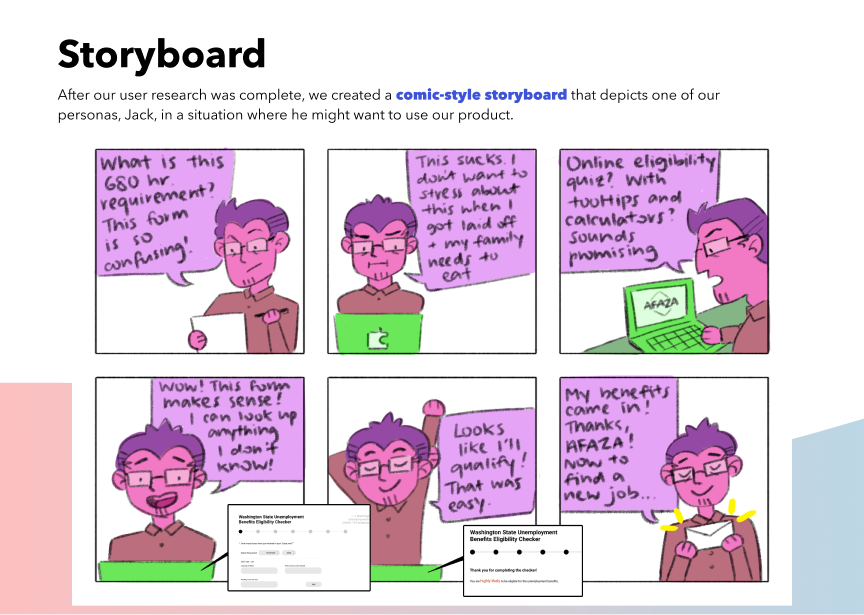

I worked in a team of five to digitize an eligibility form for Washington State residents to estimate their likelihood for receiving unemployment assistance.
| Role | UX researcher |
| Duration | November to December 2020 (4 weeks) |
| Methods and tools | Figma, interviews, think-alouds, usability tests, heuristic analysis |
To complete my Design Methods for Interactive Systems course at the University of Washington
Information School, I collaborated with fellow students in my cohort to design an online version
of an unemployment eligibility form intended to help Washington State residents estimate their
likelihood of receiving financial assistance. We created this redesign in four weeks, working in
week-long sprints. As the UX researcher of the team, I took point on interviewing target users,
discovering the biggest changes people needed, and synthesizing those findings into design
artifacts for the UX design team to implement in our prototypes.
Our first step was to compare our form with similar resources from different areas of the country.
We compared the unemployment eligibility forms of other states, such as California and New York.
When put side by side, we identified features and issues that were both common among all forms
and specific to Washington’s form in particular.
Next, we interviewed people in our network who had applied for unemployment benefits about their
experiences, hoping to identify ways which a resource like this could have aided them in the past.
Due to the unique circumstances of the 2020-2021 school year, I personally was not able to reach
users in Washington State, and opted instead to reach out to my network in other areas (I figure
that the experience of applying for benefits is universal). Most of my interviewees expressed
concerns about the specialized (and nebulous) language they encountered during the application
process, and wished for ways to make information more accessible and apparent in an online
version.
In order to help the design team implement these changes, we created an affinity diagram with our
ideas for solving the issues that the interviewees brought up, personas that our design team would
imagine using our product, and a storyboard that depicted a sample use case for our product.

Our research and design efforts culminated in a
final high-fidelity prototype viewable here.